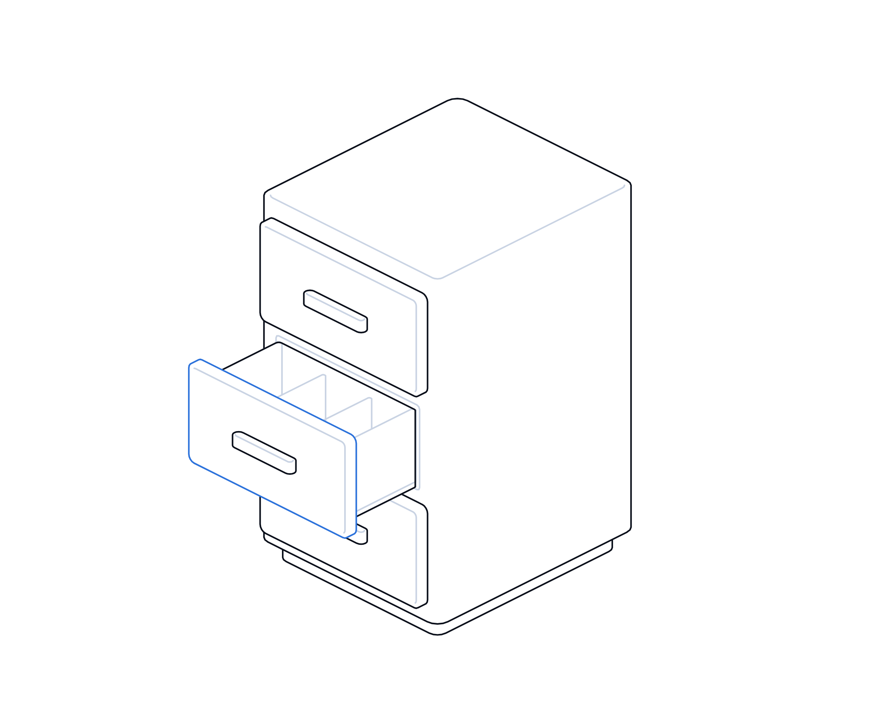
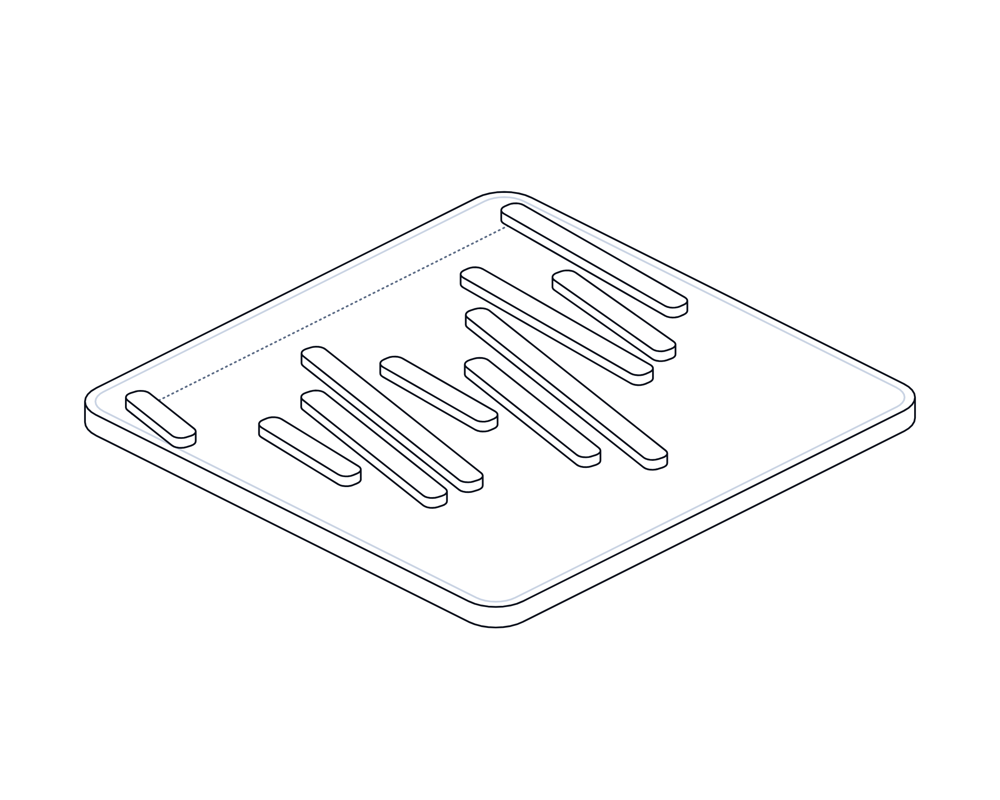

Ready for the AI Act

Hot topics · Playbook
No. 15 · November 2026
Hot topics · EU AI Act
Ready for the
AI Act.
Brussels moved some of the AI Act's deadlines, but not all of them. A practical playbook for UK organisations that sell into the EU, use AI tools sold there, or simply want to get AI governance right.
Transputec playbooktransputec.com
Inside
Contents
A practical guide for UK organisations to the EU AI Act after the Digital Omnibus: which deadlines moved, which did not, and what to do this week, this month and this quarter.
Foreword03
Introduction04
01What changed06
02Know your AI10
03Plan and govern16
Questions to ask21
Checklist22
Sources24
 Contents
ContentsReady for the AI Act · Hot Topics · Playbook02 / 25
Foreword
The deadline moved. The work did not.
In July 2026 the EU changed the timetable of its Artificial Intelligence Act. The Digital Omnibus on AI pushed the main obligations for high-risk AI systems back from August 2026 to December 2027, and for AI built into regulated products to August 2028. Headlines read it as a pause.
It was not a pause. The bans on certain AI practices have applied since February 2025. Rules for general-purpose AI models have applied since August 2025. Transparency duties, such as telling people they are talking to a chatbot and labelling deepfakes, started in August 2026, and a short grace period for marking AI-generated content ends on 2 December 2026. New bans on AI that creates non-consensual intimate images start the same day.
For UK organisations the Act matters more than its location suggests. It applies to anyone placing AI on the EU market, and to UK firms whose AI output is used in the EU. Many of the AI tools UK teams use every day are built to meet it. The UK itself has taken a different route, with existing regulators applying five principles and no AI bill in the May 2026 King's Speech.1,2 This playbook sets out what actually changed, what you need to know about the AI you build and buy, and a timeline-based plan you can start this week.
The Transputec team
Transputec
Foreword Ready for the AI Act · Hot Topics · Playbook03 / 25
Introduction
Three questions decide how much of the AI Act lands on you.
You do not need to read 400 pages of regulation to know where you stand. You need honest answers to three questions, kept up to date.
What AI do we have?
A single register of the AI systems you build, buy and use, including the AI features switched on inside software you already pay for.
What role do we play?
For each system, are you the provider who puts it on the market, or the deployer who uses it? The duties are very different.
How risky is each use?
Banned, high-risk, transparency only, or minimal. The category sets both the obligations and the deadline.
Introduction Ready for the AI Act · Hot Topics · Playbook04 / 25
The high-risk deadline moved by sixteen months. Most of the other deadlines did not move at all.
Use the extra time to build the inventory, the documentation and the supplier evidence that high-risk compliance needs. Do not use it as a reason to stop.
Introduction Ready for the AI Act · Hot Topics · Playbook05 / 25
01
Part 01
What
changed.
The Digital Omnibus on AI is now law. Here is what it moved, what it added and what it left alone.
01The new timetable
02Old dates against new
03Why the UK should care
Part 01 Ready for the AI Act · Hot Topics · Playbook06 / 25
What changed
A new clock for high-risk AI, and the same clock for everything else
Annex III moved to December 2027. Bans, general-purpose AI rules and transparency duties did not wait.
The Digital Omnibus on AI is Regulation (EU) 2026/1744. It was signed on 8 July 2026, published in the Official Journal on 24 July and entered into force on the third day after publication.3 The European Commission lists 27 July 2026 as its entry into force.4 It is adopted law, not a proposal.
Its headline change is timing. The requirements for high-risk AI systems listed in Annex III, which covers uses such as recruitment, education, credit scoring and access to essential services, now apply from 2 December 2027 instead of 2 August 2026. High-risk AI that is part of products covered by EU safety law, such as machinery or medical devices, follows from 2 August 2028.3
The reason given in the regulation is practical: harmonised standards and guidance arrived late, and many national authorities were not ready.3 The obligations themselves were not rewritten. Risk management, data governance, technical documentation, human oversight and conformity assessment are all still coming.5
What did not move matters as much. Prohibited practices and the AI literacy duty have applied since 2 February 2025, and the rules for general-purpose AI models since 2 August 2025.6 Transparency duties under Article 50 have applied since 2 August 2026. The Omnibus only gave providers of generative AI systems already on the market before that date until 2 December 2026 to add machine-readable marking to their output.3,5
The Omnibus also added. From 2 December 2026 it bans AI systems that generate non-consensual intimate images or child sexual abuse material, and it softened the AI literacy duty: organisations must now take measures to support AI literacy rather than ensure a sufficient level of it.3
Some things are still not settled. The Commission's guidelines on classifying high-risk systems were published as a draft in May 2026 and are not final.7 A separate Digital Omnibus on data and privacy rules remains a proposal. Treat anything still in draft as direction of travel, not law.
What changed Ready for the AI Act · Hot Topics · Playbook07 / 25
What changed
Old dates against new
The AI Act's main application dates after Regulation (EU) 2026/1744. Status is adopted law unless marked otherwise.
Obligation
Original date
Date now
Prohibited practices, AI literacy
2 February 2025
Unchanged. Literacy duty reworded from July 2026.
General-purpose AI models
2 August 2025
Unchanged. Commission fining powers from 2 August 2026.
Article 50 transparency
2 August 2026
Unchanged. Marking grace to 2 December 2026 for older generative systems.
New bans: intimate images, CSAM
Not in original Act
2 December 2026.
High-risk, Annex III uses
2 August 2026
2 December 2027.
High-risk, Annex I products
2 August 2027
2 August 2028.
What changed Ready for the AI Act · Hot Topics · Playbook08 / 25
What changed
Why a UK organisation is in scope
The AI Act follows the AI into the EU market, not the company's address. Four common routes bring UK firms within reach.6

01
You sell AI into the EU
Providers placing AI systems on the EU market are covered wherever they are based. High-risk providers outside the EU must appoint an EU authorised representative.
02
Your AI's output is used in the EU
UK providers and deployers are covered where the output of their AI system is used in the Union, for example scoring EU applicants.
03
You run operations in the EU
An EU subsidiary or branch using AI is a deployer established in the Union, with deployer duties.
04
Your suppliers are in scope
Even where you are not, the AI tools you buy are being built to the Act. Their documentation, labels and limits will reach you through contracts.
What changed Ready for the AI Act · Hot Topics · Playbook09 / 25
02
Part 02
Know
your AI.
An inventory, a risk category and a clear role for every system. Everything else follows from these.
01Build the inventory
02Sort by risk
03Provider or deployer
04Transparency and literacy
Part 02 Ready for the AI Act · Hot Topics · Playbook10 / 25
Know your AI
Build an AI inventory in five steps
Expect to find more AI than you think. Tie the register to procurement and change control so new AI cannot arrive unseen.
01
Ask every team, not just IT
Run a short survey: which tools, which features, what data goes in, what decisions come out. Include free tools and browser extensions.
02
Check the software you already own
CRM, HR, finance and productivity suites now ship AI features. Record which are switched on and who switched them on.
03
Record the facts for each system
Supplier, purpose, users, data, people affected, EU link, and whether output reaches customers.
04
Assign a role and a risk category
Provider or deployer; prohibited, high-risk, transparency or minimal. Send uncertain cases for legal review.
05
Give each entry an owner and a review date
A named business owner, not IT alone. Review quarterly and whenever a supplier adds an AI feature.
Know your AI Ready for the AI Act · Hot Topics · Playbook11 / 25
Know your AI
Four risk tiers, four sets of duties
A first sort for your inventory. Final classification of borderline high-risk cases needs legal input.
Tier
Examples
What it means
When
Prohibited
Social scoring, manipulative techniques, untargeted facial image scraping, workplace emotion recognition.
Stop and remove. Fines up to EUR 35m or 7% of turnover.
Since Feb 2025
High-risk
CV screening, worker monitoring, credit scoring, exam marking, access to essential services.
Risk management, documentation, oversight, logging, registration.
Dec 2027 (Annex III)
Transparency
Chatbots, image, audio or video generators, deepfakes, AI-written public-interest text.
Tell people, mark output, label deepfakes.
Since Aug 2026
Minimal
Spam filters, spelling tools, internal summarising with human review.
No specific duties. Literacy and good practice still apply.
Now
GPAI models
Large models offered to others to build on.
Documentation, copyright policy, training content summary.
Since Aug 2025
Know your AI Ready for the AI Act · Hot Topics · Playbook12 / 25
Know your AI
Provider or deployer
Most UK organisations are deployers. Some become providers without realising it.6
Topic
Provider (builds or brands it)
Deployer (uses it)
Who
Develops an AI system, or has one developed, and places it on the market under its own name.
Uses an AI system under its authority in the course of its work.
High-risk duties
Risk management, data governance, technical documentation, conformity assessment, CE marking, registration.
Use per instructions, competent human oversight, relevant input data, monitoring, incident reporting.
Transparency
Design chatbots to disclose they are AI; mark generated content machine-readably.
Label deepfakes and AI-written public-interest text; disclose emotion recognition.
Role switch
Stays provider unless another party takes over the role.
Becomes a provider if it rebrands, substantially modifies or repurposes a system into high-risk use.
UK angle
Non-EU high-risk providers need an EU authorised representative.
Covered where established in the EU or where output is used there.
Know your AI Ready for the AI Act · Hot Topics · Playbook13 / 25
Know your AI
Transparency and labelling
Article 50 has applied since 2 August 2026. The marking grace period for generative systems already on the market ends on 2 December 2026.3

01
Tell people they are talking to AI
Chatbots and voice agents must disclose they are AI unless it is obvious. Check every customer-facing assistant, including supplier-hosted ones.
02
Mark generated content
Providers of systems that generate text, images, audio or video must mark output in a machine-readable, detectable way. Ask your suppliers how they do it.
03
Label deepfakes and public-interest text
Deployers must disclose deepfakes and AI-written text published to inform the public, unless a person with editorial responsibility has genuinely reviewed it.8
04
Use the code and the icons
The Commission's voluntary Code of Practice, finalised in June 2026, and its EU icon set give a recognised way to show compliance.9
Know your AI Ready for the AI Act · Hot Topics · Playbook14 / 25
AI literacy: lighter wording, same good sense
The duty has applied since February 2025. The Omnibus changed it to taking measures to support AI literacy, without guaranteeing any individual's level.3
What it asks
Providers and deployers take measures to support AI literacy of staff and others using AI on their behalf, suited to their role and context.
What good looks like
Short role-based training, a plain-English AI policy, and guidance on checking output, protecting data and spotting misuse.
What to record
Who was trained, on what, and when. Keep it with your AI inventory so you can show the link between tools and training.
Common mistake
One generic e-learning module for everyone. Recruiters using screening tools need different guidance from marketers using image generators.
Owner
HR and the AI programme owner
Bring this to the monthly review, with a date for each action.
Know your AI Ready for the AI Act · Hot Topics · Playbook15 / 25
03
Part 03
Plan and
govern.
Documentation, supplier evidence and a governance rhythm, laid out against the dates that matter.
01A governance loop
02Documentation that earns its keep
03Three UK cases
04The timeline plan
Part 03 Ready for the AI Act · Hot Topics · Playbook16 / 25
Plan and govern
A governance loop that fits on one page
Light enough for a mid-sized firm, solid enough to grow into ISO/IEC 42001 if you choose to certify.
Own
Name an accountable executive and an AI programme owner. Agree who can approve new AI use.
Assess
Classify each new system before go-live: role, risk tier, data, people affected, EU link.
Document
Keep the evidence the tier requires: purpose, instructions, oversight, testing, supplier documents.
Monitor
Watch performance, complaints and incidents. Review high-risk and customer-facing systems quarterly.
Improve
Feed lessons into policy, training and procurement. Report to the board twice a year.
ISO/IEC 42001 is a management system standard for AI. The first AI Act harmonised standard, EN 18286, is designed to sit on top of it.10
Plan and govern Ready for the AI Act · Hot Topics · Playbook17 / 25
Plan and govern
Documentation that earns its keep
Records you will need for the Act, and that also help procurement, audit and incident response.
AI register
Every system, owner, role, risk tier, supplier, EU link and review date. The spine of everything else.
Use-case assessment
One or two pages per material system: purpose, data, people affected, risks, controls and sign-off.
Oversight plan
Who reviews output, what they check, when they can stop the system, and how decisions are logged.
Supplier evidence
Instructions for use, transparency features, marking approach, conformity status and incident contacts.
If you might be a provider of a high-risk system, start technical documentation now. It takes longer than any other part.
Plan and govern Ready for the AI Act · Hot Topics · Playbook18 / 25
Plan and govern
Three UK organisations, three different positions
Recruitment firm
CV screening for EU clients
Their role
Deployer of a supplier's screening tool, filling roles in Ireland.
Risk tier
High-risk (employment, Annex III). Deployer duties from 2 December 2027.
Do now
Get the supplier's instructions for use. Train recruiters who review rankings.
Watch out
Rebranding or repurposing the tool could make the firm a provider.
Software company
Generative assistant sold to EU customers
Their role
Provider of a generative AI system sold in the EU.
Risk tier
Transparency. Marking for versions sold before August 2026 due by 2 December 2026.
Do now
Confirm machine-readable marking and chatbot disclosure against the Code of Practice.
Watch out
A significant redesign can end the grace period.
Retailer
AI images and copy in marketing
Their role
Deployer of generative tools for UK and EU campaigns.
Risk tier
Transparency. Deepfake labelling in force since 2 August 2026.
Do now
Set a labelling rule for realistic synthetic people. Brief agencies.
Watch out
Borderline edits need judgement; record each decision.
Plan and govern Ready for the AI Act · Hot Topics · Playbook19 / 25
Plan and govern
The timeline plan
Work back from the dates that are fixed in law. Owners are suggestions; adapt them to your structure.
This week
Name an AI owner. Check for prohibited uses. List customer-facing chatbots and generative tools.
COO or CIO
This month
Complete the inventory and first risk sort. Send supplier questions. Publish an AI use policy.
AI owner, procurement
By 2 Dec 2026
Confirm content marking from generative suppliers. Labelling rules live. Check the new bans.
Marketing, product
This quarter
Role-based literacy training. Use-case assessments for material systems. Board briefing.
HR, AI owner
2027
Build high-risk evidence: oversight, logs, supplier documentation. Track final guidelines.
Risk, legal, IT
By 2 Dec 2027
Annex III high-risk systems compliant as provider or deployer.
Accountable executive
Plan and govern Ready for the AI Act · Hot Topics · Playbook20 / 25
Questions to ask
For the board, and for every AI supplier
Clear answers to these show whether you are ready. Vague ones show where to start.
For the board
?Do we have a complete, owned register of the AI we build, buy and use?
?Which of our AI uses touch the EU, and in which role: provider or deployer?
?Are any of our uses high-risk, and are we building the evidence for December 2027?
For AI suppliers
?How does your product mark AI-generated content, and have you signed the Commission's Code of Practice?
?Is the system high-risk under the AI Act, and will you give us instructions for use and oversight guidance?
?Who is your EU authorised representative, and how will you tell us about incidents and material changes?
Questions to ask Ready for the AI Act · Hot Topics · Playbook21 / 25
Checklist
Are you ready for the AI Act?
Tick what is in place today. Anything left blank is your next step.
A named owner for AI governance
With authority to approve or stop new AI use.
A current AI register
Including AI features inside existing software.
Role and risk tier recorded for each system
Borderline high-risk cases sent for legal review.
No prohibited practices in use
Checked against Article 5, including the new bans from 2 December 2026.
Transparency in place
Chatbot disclosure, content marking from suppliers, deepfake labelling rules.
Role-based AI literacy measures
With records of who was trained and when.
Supplier questions sent and answered
Evidence filed with the register.
This checklist is a practical guide, not legal advice. Take advice on classification of specific systems.
Checklist Ready for the AI Act · Hot Topics · Playbook22 / 25
Glossary
Words worth knowing
AI system
A machine-based system that infers from inputs how to generate outputs such as predictions, content, recommendations or decisions.
Provider
The organisation that develops an AI system or model, or has it developed, and places it on the market under its own name.
Deployer
An organisation using an AI system under its authority, other than for personal non-professional use.
High-risk AI system
A system in an Annex III use, such as recruitment or credit, or a safety component of a regulated product.
General-purpose AI model
A model trained on broad data that can perform a wide range of tasks and be built into other systems.
Article 50
The AI Act's transparency duties: chatbot disclosure, marking generated content, labelling deepfakes.
Digital Omnibus on AI
Regulation (EU) 2026/1744, which amended the AI Act's timetable and some duties in July 2026.
Authorised representative
An EU-based party a non-EU provider of high-risk AI must appoint by written mandate.
Harmonised standard
A European standard cited in the Official Journal that gives a presumption of conformity.
ISO/IEC 42001
The international management system standard for AI, usable as the backbone of AI governance.
Glossary Ready for the AI Act · Hot Topics · Playbook23 / 25
Sources
Sources and notes
Sources were accessed in November 2026. Dates and statuses were checked against EUR-Lex and the European Commission. This playbook is general guidance, not legal advice.
1
GOV.UK, A pro-innovation approach to AI regulation: government response, 6 February 2024, https://www.gov.uk/government/consultations/ai-regulation-a-pro-innovation-approach-policy-proposals/outcome/a-pro-innovation-approach-to-ai-regulation-government-response
2
IAPP, King's Speech signals diffuse UK digital policy agenda, but no AI bill, 14 May 2026, https://iapp.org/news/a/king-s-speech-signals-diffuse-uk-digital-policy-agenda-but-no-ai-bill
3
EUR-Lex, Regulation (EU) 2026/1744 (Digital Omnibus on AI), OJ L 24 July 2026, https://eur-lex.europa.eu/eli/reg/2026/1744/oj/eng
4
European Commission, AI Act: regulatory framework for AI, updated 19 October 2026, https://digital-strategy.ec.europa.eu/en/policies/regulatory-framework-ai
5
Freshfields, EU AI Act unpacked #34: the final Digital Omnibus on AI, 10 July 2026, https://www.freshfields.com/en/our-thinking/blogs/technology-quotient/eu-ai-act-unpacked-34-the-final-digital-omnibus-on-ai-key-amendments-to-the-a-102nber
6
EUR-Lex, Regulation (EU) 2024/1689 (Artificial Intelligence Act), OJ L 12 July 2024, https://eur-lex.europa.eu/eli/reg/2024/1689/oj/eng
7
European Commission, Draft guidelines on the classification of high-risk AI systems, 19 May 2026, https://digital-strategy.ec.europa.eu/en/library/draft-commission-guidelines-classification-high-risk-ai-systems
8
Paul, Weiss, EU finalises transparency rules for AI-generated content, 4 August 2026, https://www.paulweiss.com/insights/client-memos/eu-finalises-transparency-rules-for-ai-generated-content
9
European Commission, Code of Practice on marking and labelling of AI-generated content, 2026, https://digital-strategy.ec.europa.eu/en/policies/code-practice-ai-generated-content
10
European Commission, First harmonised standard supporting the AI Act published in the Official Journal, 19 October 2026, https://digital-strategy.ec.europa.eu/en/library/first-harmonised-standard-supporting-ai-act-published-official-journal
Sources Ready for the AI Act · Hot Topics · Playbook24 / 25
Want a clear view
of your AI estate?
Transputec helps UK organisations find the AI they already use, sort it by risk, put sensible governance around it and ask suppliers the right questions.
Book an AI governance reviewtransputec.com
Read the companion report
The AI Act's New Clock · Intelligence report No. 15, the companion report
Transputec · Hot Topics · No. 15